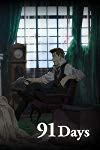

")
 
 IMDB-Wertung: 7.7 / 10
IMDB-Wertung: 7.7 / 10  Metascore:
Metascore: 
The story takes place in Lawless, a town thriving on black market sales of illicitly brewed liquor. Avilio returns to Lawless after some time away, following the murder of his family in a mafia dispute there.
Jahr: 2016
Dauer: 24 Minuten
FSK: 16
Land: Japan Studio: KSMTonspuren: DTS - ,
Untertitel: Deutsch,
Auflösung: 1080p (1920x1080) Größe: 691 MB
Genre: Thriller, Drama, Krimi, Animation/Trick, TV-Serie
Regisseur: Hiro Kaburaki, Tomoko Hiramuki, Kotomi Deai, Masayuki Iimura, Yoriyasu Kogawa
Drehbuch: Hiro Kaburaki, Yuichiro Kido, Taku Kishimoto
Soundtrack:
Darsteller:
 Brandon Potter als Fango, 8 episodes, 2016
Brandon Potter als Fango, 8 episodes, 2016 Daisuke Ono als Vanno Clemente, 1 episode, 2017
Daisuke Ono als Vanno Clemente, 1 episode, 2017 Yûichi Nakamura als Ronaldo, unknown episodes
Yûichi Nakamura als Ronaldo, unknown episodes Takahiro Sakurai als Valbero, unknown episodes
Takahiro Sakurai als Valbero, unknown episodesDatei: X:\HD-Anime-Serien\91 Days\91 Days E01 Die Mordnacht.mkv seit 16.11.2019
Festplatte: Gemischt-01+Anime
 Es gibt insgesamt 67 Filme in der Gruppe 'HD-Anime-Serien'
Es gibt insgesamt 67 Filme in der Gruppe 'HD-Anime-Serien'